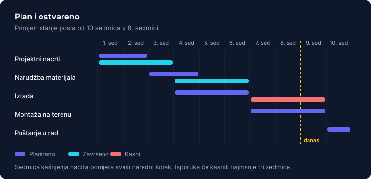
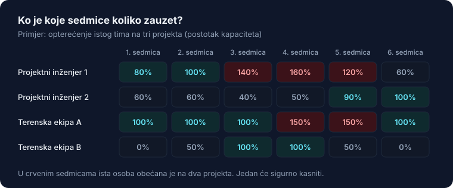

Kada softver za upravljanje projektima postaje neophodan?
U firmama koje se bave inženjeringom, izvođenjem radova i montažom plan projekta najčešće se napravi jednom, na početku posla. U Excelu nastane lijep gantogram, pokaže se na sastanku, zatim ode u neki folder i više se ne otvara. Posao ipak ide, jer voditelj projekta sve drži u glavi. Kad istovremeno krenu tri-četiri posla, takav način umori i čovjeka i firmu.

Zašto plan ostane u ladici?
Držati plan u Excelu ažurnim posao je za sebe. Stigne vijest s terena, neko otvori datoteku, pomjeri datume i novu verziju e-mailom pošalje svima. Dvije sedmice kasnije kruže četiri različite verzije i niko ne zna koja je tačna. Nakon nekog vremena odustane i onaj ko je plan ažurirao.
Od tada se stanje projekta saznaje telefonom. Teren se pita „gdje smo“, a odgovor je „sutra završavamo“. Isti odgovor može stizati tri sedmice, jer nigdje ne piše koliko je posto posla završeno.
To se osjeti i prema kupcu. Kad treba pripremiti situaciju, iz dokumenata se pokušava skupiti ko je koliko uradio, koji je materijal isporučen na gradilište, koji su dodatni radovi dati kupcu na potvrdu. Svaki dokument koji nedostaje znači da faktura ostaje za naredni mjesec.
Kako malo kašnjenje naraste?
U projektu su poslovi međusobno povezani. Kad kasni odobrenje nacrta, kasni narudžba materijala; kad materijal kasno stigne, pomjera se izrada; kad se pomjeri izrada, terenska ekipa čeka bez posla ili je pošalju na drugi posao. Pomak od jedne sedmice na početku dočeka vas pri isporuci kao tri-četiri sedmice.

Sam taj lanac je neizbježan; u svakom projektu nešto se pomjeri. Problem je što se pomak kasno primijeti. Ako plan nije ažuran, za kašnjenje saznate dvije sedmice prije roka isporuke, a tada jedino možete uvesti prekovremeni rad i tražiti od kupca produženje roka.
Isti tim, tri projekta
U firmi srednje veličine, kako raste broj projekata, najveći tjesnac nastaje kod ljudi. Isti inženjer crta za tri projekta, ista terenska ekipa obećana je na dva gradilišta. Svaki projekat sam za sebe izgleda razumno, ali kad ih stavite jedan pored drugog, vidi se da se u nekim sedmicama od jedne osobe očekuje posao za dvije.

Tu tabelu je moguće voditi u Excelu, ali je pri svakoj promjeni u projektu treba ručno ponovo izračunati. To niko ne radi. Preklapanje se otkrije onog dana kad ekipa ne može otići na teren.
Šta radi softver za upravljanje projektima?
U osnovi, drži plan živim. Poslovi, njihova trajanja i međusobne zavisnosti unose se jednom. Kad neki posao zakasni, datumi poslova koji zavise od njega sami se pomjere i novi rok isporuke odmah se vidi.
Napredak se unosi s terena. Vođa ekipe na telefonu označi šta je tog dana urađeno, doda fotografiju i zabilježi koji materijal nedostaje. Osoba u uredu ne mora nikoga zvati da sazna stanje.
Dokumenti se okupljaju pod projektom: ugovor, posljednja verzija nacrta, prepiska s kupcem, odobreni dodatni radovi, zapisnici o primopredaji. Kad dođe vrijeme za situaciju, zna se gdje tražiti.
Na kraju, svi projekti stoje jedan pored drugog na jednom ekranu. Na prvi pogled vidite koji je u roku, koji kasni i ko je koje sedmice preopterećen. Kad taj ekran postoji, na sedmičnom sastanku se ne troši vrijeme na pitanja o stanju, nego se odmah razgovara o tome šta uraditi.
Kod koje veličine postaje potreban?
Timu od pet ljudi s jednim projektom dovoljna je dobro vođena Excel datoteka. Koliko mi vidimo, prestaje biti dovoljna u ovim slučajevima:
- Ako istovremeno teče više od tri projekta.
- Ako iste osobe ili ekipe rade na više projekata.
- Ako je telefonski poziv jedini način da saznate stanje na terenu.
- Ako situacije kasne jer se ne mogu prikupiti dokumenti.
- Ako ne znate koliko je projekata prošle godine isporučeno sa zakašnjenjem.
Na šta paziti na početku
Najčešća greška je pokušaj da se od prvog dana u sistem unese svaki detalj. Listu od tristo stavki niko ne može držati ažurnom. Počnite s petnaest-dvadeset glavnih poslova po projektu, a detalje dodajte kad zatrebaju.
Drugo, unos podataka s terena mora biti vrlo lak. Od vođe ekipe ne možete očekivati da svake večeri sjedne za računar. Podatak koji se na telefonu ne može unijeti u dva dodira nakon nekog vremena se uopće ne unosi.
Treće, počnite od novog projekta. Prenositi u sistem napola završen posao je mukotrpno i odmah odbija ekipu. Sljedeći posao otvorite u sistemu, a stari neka se završe po starom.
Koji će se alat koristiti, odluka je koja dolazi nakon toga. Postoje gotovi alati za upravljanje projektima, projektni moduli ERP sistema i rješenja pisana po mjeri firme. Mi prvo pogledamo kako firma vodi projekte, pa prema tome predložimo alat.
Česta pitanja
Imamo plan u Excelu — zašto nije dovoljan?
Excel je dovoljan da se plan nacrta. Teškoće nastaju kad plan treba držati ažurnim i kad treba istovremeno vidjeti više projekata. Dok datoteka stoji na računaru jedne osobe, podaci s terena do nje ne stižu.
Hoće li terenska ekipa unositi podatke s telefona?
Hoće, ako unosi malo podataka i ako je ekran jednostavan. Po našem iskustvu, najlakše se prihvata fotografisanje i slanje fotografije, jer ekipa ionako slika i šalje na WhatsApp.
Gotov alat ili softver po mjeri firme?
Ako je vaš posao blizak standardnom toku, gotov alat je brži i jeftiniji. Ako treba veza sa situacijama, ponudama i zalihama, ili je vaš način rada specifičan, prilagođen sistem traje duže.
Naše povezane usluge: ERP za inženjerske i izvođačke firme, ERP rješenja za mala i srednja preduzeća.
Pogledajmo zajedno vaše projekte
Pregledajmo zajedno jedan vaš projekat koji je u toku i vidimo gdje zapinje.
Razgovarajmo o vašem projektu